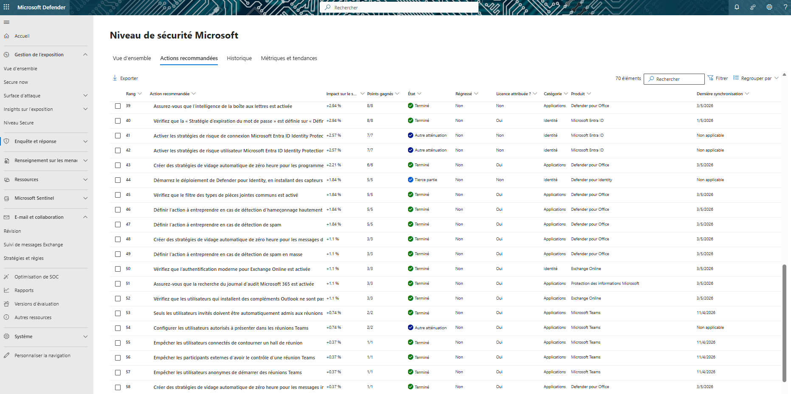
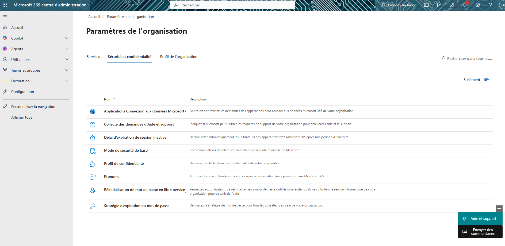

Sécurisation Office 365
Contexte
Dans le cadre de mon alternance chez Cognacq-Jay Image, j’ai participé à un projet de sécurisation de l’environnement Microsoft 365 avec l’administrateur Active Directory et Windows.
L’objectif était d’améliorer le niveau de sécurité global de l’entreprise via les recommandations Microsoft Secure Score et la mise en place de politiques de sécurité gratuites.
Objectifs
- Améliorer le Microsoft Secure Score
- Mettre en place le MFA
- Renforcer la sécurité des comptes utilisateurs
- Tester les stratégies de sécurité Microsoft
- Documenter les procédures utilisateurs
Environnement technique
Travaux réalisés
Analyse des recommandations
Étude des recommandations Microsoft Defender afin d’identifier les politiques applicables gratuitement et leur impact sur le Secure Score.
Mise en place du MFA
Participation au déploiement de l’authentification multifacteur avec plusieurs méthodes : Microsoft Authenticator, Token, mail ou SMS.
Tests et validation
Réalisation de tests sur mon propre compte afin de vérifier le comportement des stratégies de sécurité avant leur déploiement global.
Documentation
Création de procédures utilisateurs et d’un tableau récapitulatif des différentes politiques de sécurité applicables dans Microsoft 365.
Politiques de sécurité étudiées
Les différentes politiques ont été sélectionnées selon : leur faisabilité, leur impact utilisateur et leur contribution au Microsoft Secure Score.
Résultats obtenus
Amélioration du niveau de sécurité
- Mise en place du MFA
- Activation de politiques Microsoft Defender
- Réduction des risques liés au phishing
- Renforcement des accès utilisateurs
- Amélioration du Secure Score
Impact pour l’entreprise
La sécurisation Office 365 permet d’ajouter une couche de protection supplémentaire contre les accès non autorisés, les tentatives d’hameçonnage et les usages non sécurisés.
Capture Microsoft Defender

Tableau des recommandations Microsoft Defender utilisées pour améliorer le Secure Score de l’entreprise.
Capture Microsoft 365 Admin Center

Configuration des paramètres de sécurité et confidentialité dans le centre d’administration Microsoft 365.
Compétences mobilisées
- Support aux utilisateurs
- Mise à disposition d’un service informatique
- Sécurisation des accès
- Gestion des politiques Microsoft 365
- Tests et validation de configurations
- Documentation technique
Bilan personnel
Cette mission m’a permis de mieux comprendre le fonctionnement des politiques de sécurité Microsoft 365, du MFA et du Secure Score.
J’ai également appris à analyser l’impact utilisateur des différentes règles avant leur mise en production.